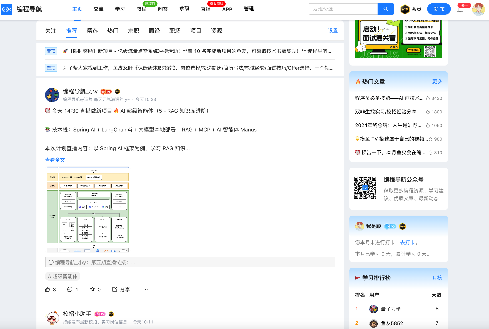
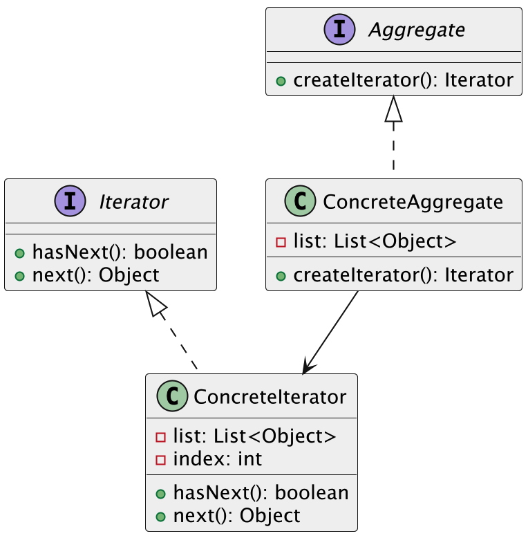

什么是迭代器模式?
迭代器模式（Iterator Pattern）是一种行为型设计模式，它的主要作用是提供一种方法，顺序访问一个集合对象内部的元素，而又不暴露集合的内部结构。
简单说就是，我们不需要知道集合内部是怎么存储数据的（比如是数组、链表还是其他什么复杂结构），只需要通过统一的接口一步步访问元素，像走楼梯一样一级一级地拿到数据。这种模式，把遍历操作从集合对象里抽取了出来，专门交给迭代器对象去处理。集合本身负责存放数据，迭代器负责按顺序去访问数据，两边各司其职，互不干扰。
就拿编程导航网站来说，我们会在里面刷帖，首页有各种热门技术帖、面试经验总结、代码分享等等。你点下一页，或者下拉加载，它就自动给你继续展示新的帖子。这个网站背后其实管理着成百上千条帖子，可能分门别类地存放在数据库里，但对于我们用户来说，根本不关心底层是怎么存的，我们只关心——“我下拉之后能不能顺利接着看下一条”。

这就是迭代器模式的典型应用。前端页面就像是调用了一个“帖子迭代器”，每调用一次下一页，就能拿到下一页的数据。而迭代器背后已经封装好了怎么去找数据、怎么去分页、甚至怎么缓存。
所以说，迭代器模式的好处就在于，它把“访问方式”从“存储结构”里解耦了出来。数据该怎么展示是前端的事，数据怎么存是后端的事，两个互不干扰，代码也更清晰、扩展性更好。
为什么要使用迭代器模式？
在开发中，集合对象内部的数据结构往往不一样，有的可能是数组，有的是链表，甚至还有更复杂的树结构。如果我们每次都直接操作内部结构，不仅耦合度高，而且维护起来非常麻烦。
使用迭代器模式以后，集合内部怎么存储，遍历逻辑怎么实现，都被封装到专门的迭代器对象中，集合只需要提供一个统一的接口给外部使用。这样做可以有效地降低集合和使用者之间的耦合，同时让遍历操作更加灵活、安全，也更符合面向对象编程的设计原则。
为了让大家更好地感受到迭代器模式的作用，以流程节点遍历为例，我们需要实现一个支持遍历流程节点的系统。让我们来看看使用和不使用迭代器模式的区别：

通过对比可以看出，不使用迭代器模式时，流程类直接暴露了内部数组，客户端需要了解数组的实现细节才能进行遍历。这种方式导致代码耦合度高，且难以扩展，比如当需要改变内部存储结构时，所有使用该类的代码都需要修改。
而使用迭代器模式后，我们将遍历逻辑封装在迭代器类中，客户端只需要通过统一的接口进行遍历，不需要关心内部实现细节。这种设计使得代码结构更加清晰，降低了耦合度，提高了代码的可维护性。
迭代器模式的应用场景
举一些开发中典型的应用场景：
- 自定义分页组件的数据遍历：在实现自定义分页功能时，后台可能需要遍历分页数据源（如数据库游标、远程接口返回的数据流）。通过迭代器模式封装遍历逻辑，使分页组件与数据源解耦，统一访问方式。
- 流程引擎中的节点遍历：在审批流程或业务流程引擎中，每个流程由多个节点组成，系统需要按顺序遍历这些节点来执行相应操作。使用迭代器模式可以统一节点遍历逻辑，支持顺序执行、跳过、回退等操作。
迭代器模式的基本结构
迭代器模式具有的角色和职责：
1）迭代器接口（Iterator）：定义访问和遍历元素的方法。
2）具体迭代器（ConcreteIterator）：实现迭代器接口，负责具体遍历逻辑。
3）聚合接口（Aggregate）：定义创建迭代器对象的方法。
4）具体聚合（ConcreteAggregate）：实现聚合接口，创建对应的迭代器实例。
下面用一张类图帮大家更直观地理解迭代器模式的结构：

迭代器模式的实现
下面就以 “流程引擎中的节点遍历” 为例，我们用迭代器模式实现一个简单的流程节点遍历系统。
1）定义节点类：表示流程中的一个节点
class ProcessNode {
private String name;
public ProcessNode(String name) {
this.name = name;
}
public String getName() {
return name;
}
@Override
public String toString() {
return "ProcessNode{name='" + name + "'}";
}
}
在这段代码中，我们定义了一个 ProcessNode 类，表示流程中的一个节点。每个节点有一个名称，表示这个节点的类型（如“审批节点”，“通知节点”等）。我们实现了 toString 方法，方便在遍历时输出节点信息。
2）定义迭代器接口：提供统一的遍历方法
interface Iterator {
boolean hasNext(); // 判断是否还有下一个元素
Object next(); // 获取下一个元素
}
在这里，我们定义了一个 Iterator 接口，它包含 hasNext() 和 next() 方法。hasNext() 判断是否还有下一个节点，next() 返回下一个节点。
3）定义具体的流程类：实现节点集合并返回迭代器
class Workflow {
private ProcessNode[] nodes;
private int size;
public Workflow(int capacity) {
nodes = new ProcessNode[capacity];
size = 0;
}
// 添加节点到流程中
public void addNode(ProcessNode node) {
if (size < nodes.length) {
nodes[size++] = node;
}
}
// 返回流程的迭代器
public Iterator iterator() {
return new WorkflowIterator();
}
// 具体的迭代器实现类
private class WorkflowIterator implements Iterator {
private int index;
public WorkflowIterator() {
index = 0;
}
@Override
public boolean hasNext() {
return index < size;
}
@Override
public Object next() {
if (hasNext()) {
return nodes[index++];
}
return null;
}
}
}
在这里，我们定义了一个 Workflow 类，表示流程。Workflow 内部保存了一个节点数组，并提供了 addNode() 方法来添加节点。iterator() 方法返回一个 Iterator 对象，用于遍历流程中的节点。我们实现了一个 WorkflowIterator 内部类，它实现了 Iterator 接口，提供了节点的遍历逻辑。
4）客户端调用示例
public class Client {
public static void main(String[] args) {
Workflow workflow = new Workflow(5);
workflow.addNode(new ProcessNode("开始"));
workflow.addNode(new ProcessNode("审批"));
workflow.addNode(new ProcessNode("通知"));
workflow.addNode(new ProcessNode("结束"));
// 获取迭代器进行遍历
Iterator iterator = workflow.iterator();
while (iterator.hasNext()) {
ProcessNode node = (ProcessNode) iterator.next();
System.out.println("Executing node: " + node);
}
}
}
输出结果：
Executing node: ProcessNode{name='开始'}
Executing node: ProcessNode{name='审批'}
Executing node: ProcessNode{name='通知'}
Executing node: ProcessNode{name='结束'}
在客户端测试代码中，我们首先创建了一个 Workflow 对象并添加了几个节点。然后，通过 iterator() 方法获取迭代器，使用 hasNext() 和 next() 方法遍历流程中的节点并执行相关操作。每次调用 next() 都返回一个节点对象，并打印节点的执行信息。
迭代器模式的优缺点
优点
- 简化遍历操作：迭代器模式将集合的遍历过程抽象出来，提供了统一的接口来访问集合中的元素。这样，客户端不需要关心集合的具体实现，遍历操作变得更加简单和一致。
- 支持多种遍历方式：通过迭代器，集合的遍历方式可以灵活调整，比如可以用不同的顺序遍历集合，甚至在一些情况下，可以实现反向遍历等功能，增强了系统的灵活性。
- 避免暴露集合的内部结构：迭代器模式通过引入迭代器对象来控制集合元素的访问，客户端无需知道集合内部是如何存储的，从而保护了集合的封装性，符合信息隐藏原则。
缺点
- 增加了复杂性：虽然迭代器模式提供了统一的接口，但为了支持迭代器，可能需要引入额外的类和接口，这会导致系统的类数增加，增加了实现的复杂度。
- 不适合小型集合：在一些简单的小型集合中，使用迭代器模式可能显得有些过于复杂。对于一些简单的列表，直接使用传统的遍历方式可能会更加简单和高效。
- 只能一次遍历：标准的迭代器模式通常只支持单一方向的遍历，并且在遍历过程中无法回溯。如果需要多次遍历或在遍历过程中进行复杂的状态修改，可能需要额外的管理或更复杂的设计。
扩展知识 - 源码分析
开源框架中的应用
1、JDK
Java 集合框架对迭代器模式的应用特别典型。我们可以随便打开一个集合类，比如 ArrayList，会发现它实现了 Iterable 接口，里面有个iterator()方法，我们来看下实现的源码：
public class ArrayList<E> extends AbstractList<E>
implements List<E>, RandomAccess, Cloneable, java.io.Serializable
public Iterator<E> iterator() {
return new Itr();
}
private class Itr implements Iterator<E> {
int cursor; // index of next element to return
int lastRet = -1; // index of last element returned; -1 if no such
int expectedModCount = modCount;
Itr() {}
// 负责遍历逻辑
public boolean hasNext() {
// 判断是否还有元素
}
public E next() {
// 返回当前元素，并指向下一个
}
public void remove() {
// 可选操作，移除当前元素
}
}
}
这里的iterator()方法返回了一个Itr内部类的实例，它实现了Iterator接口。通过hasNext()和next()我们就可以一步步安全地遍历ArrayList。
也就是说，我们不需要知道 ArrayList 是基于数组还是链表，它都提供了统一的遍历方式。HashSet、LinkedList 也是一样的处理逻辑。
优势和作用
通过上述的源码分析，我们可以再次总结下迭代器模式的作用。
1、统一访问方式
ArrayList 实现了 Iterable 接口，不管内部是数组还是其他结构，我们都可以用 Iterator 或增强 for 循环来遍历，代码更统一。
2、隐藏实现细节
具体的遍历逻辑封装在内部类 Itr 中，使用时只需要关心 hasNext() 和 next()，不用了解底层怎么实现。
3、增强可扩展性
只要实现了 Iterable 接口，任何自定义集合都能接入现有遍历逻辑，无需修改调用方代码，方便扩展。
相关面试题
可以在 程序员面试刷题神器 - 面试鸭 上获取到企业常问的设计模式面试题。比如：